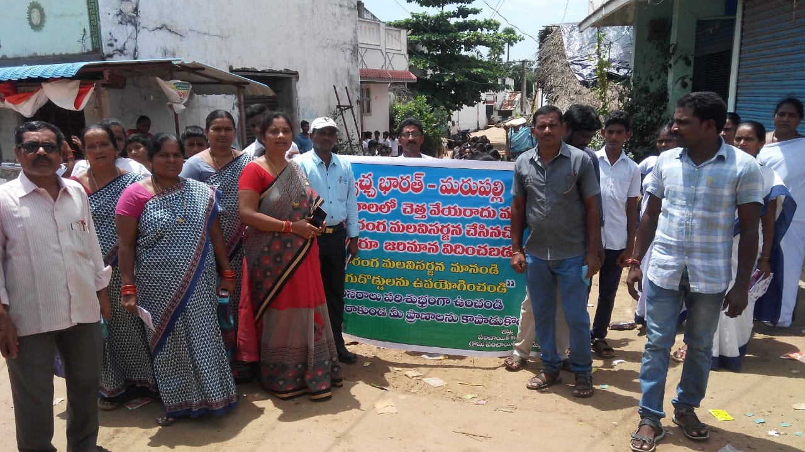
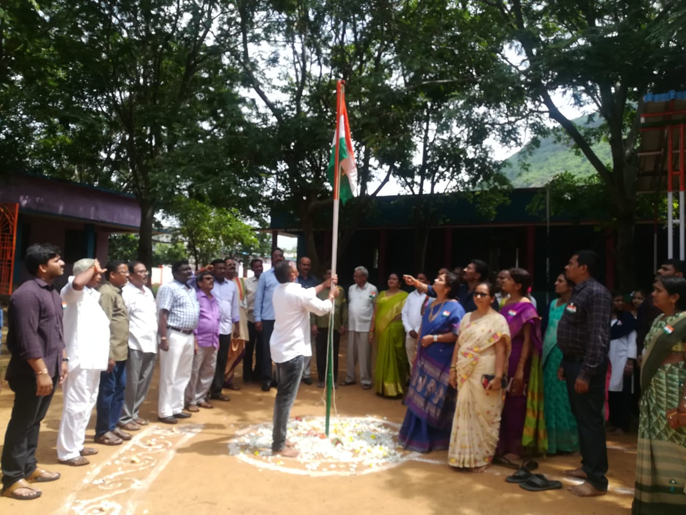
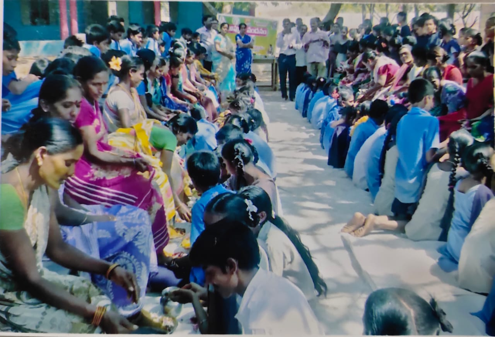
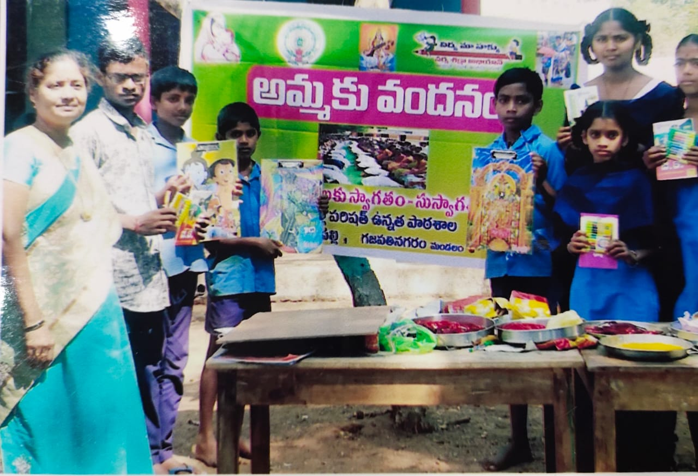

School Activities
>> Distribution of School Uniforms to promising students since 2015 – with the help of students and parents.
>> N.C.C. Training
>> Technical Education Facility
>> Eco – friendly club for environment awareness
>> Evening game practice
>> Navoday Vidyalaya Competitive Selection Examination
>> Science Exhibition
>> NMMS Examination
>> Govt. Drawing Exam
Extra – curriculur Activities
~ The awareness about pollution during Dipawali among people thro school students.
~ Communication with rural students‚ special activities for them.
~ Communication with below Economical Class people‚ telling them the importance of study and clean atmosphere in meetings.
~ Students Participation in essay– competition‚ elocution competition and drawing competition.
   